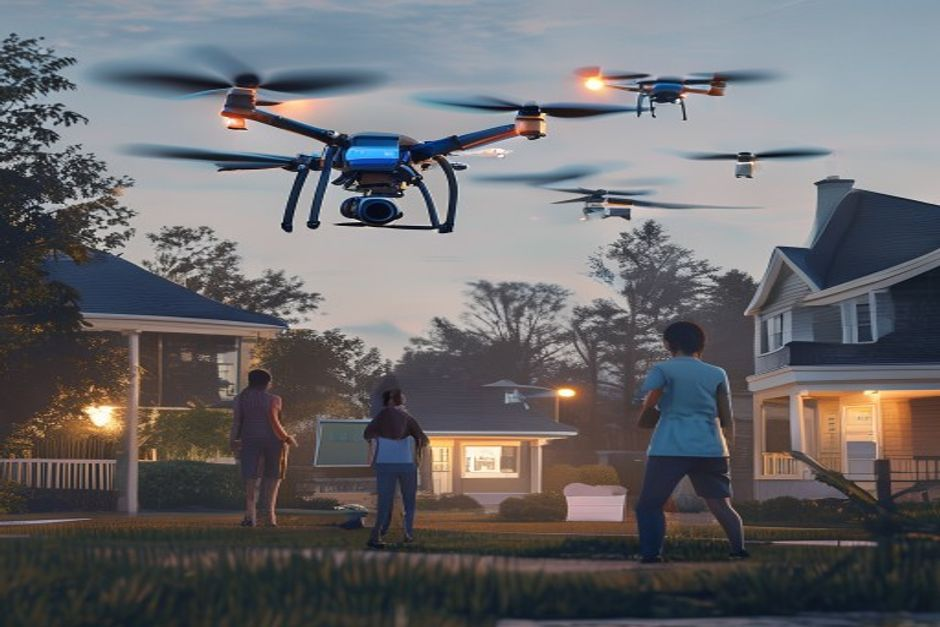

This report analyzes the internal cost structures of OmniLogistics' Project SkyNet Heavy-Lifter v2 fleet economics, benchmarked against global commercial drone delivery standards. The primary source of truth is internal documents, supplemented by approved web evidence for market context. Key findings include a $45.5M capital expenditure, a projected 35% cost reduction per package, and a regulatory compliance issue with the Heavy-Lifter v2 exceeding the 25 lbs urban weight limit.
Capital Expenditure and Cost Reduction Projections for Project SkyNet
OmniLogistics has committed $45.5M to Project SkyNet, with a clear path to reducing last-mile delivery costs by 35% by Q4 2027.
The Q3 Financial Investment Memo details a $45.5M capital expenditure for Project SkyNet, a 25% increase from initial Q1 projections due to advancements in obstacle avoidance systems. The budget is allocated across hardware acquisition ($22.0M), software and AI development ($12.5M), regulatory compliance and licensing ($4.5M), marketing and public relations ($3.0M), and a contingency fund ($3.5M).
The memo projects that by Q4 2027, Project SkyNet will reduce last-mile delivery costs by 35%, from $4.10 per package to $2.66. The break-even point is estimated at 18 months post-launch, assuming a minimum daily delivery volume of 150,000 packages across the top 5 urban markets.
Supplementary web evidence from the Last-Mile Drone Delivery Networks Market Research Report 2034 indicates that autonomous drone delivery platforms are projected to reduce per-delivery costs to as low as $2.00-$4.00 by 2030, corroborating the internal projection of $2.66 by 2027. The report also notes that conventional delivery costs range from $8.50 to $15.00 per package in 2025, highlighting the competitive advantage of drone delivery.
The global last-mile drone delivery market was valued at $1.4B in 2025, growing to $1.8B in 2026, and projected to reach $19.2B by 2034 at a CAGR of 32.5%, indicating strong market tailwinds for Project SkyNet.
- [Chunk: dfe35bb5-0eda-4a50-8180-aacb83f79cbd] "OmniLogistics is allocating $45.5 million in capital expenditure for 'Project SkyNet,' our autonomous drone delivery initiative in urban centers." — Establishes the total investment.
- [Chunk: dfe35bb5-0eda-4a50-8180-aacb83f79cbd] "We project that by Q4 2027, Project SkyNet will reduce last-mile delivery costs by 35% (from $4.10 per package to $2.66)." — Core cost reduction target.
- [Chunk: dfe35bb5-0eda-4a50-8180-aacb83f79cbd] "The break-even point for this capital investment is estimated at 18 months post-launch, assuming a minimum daily delivery volume of 150,000 packages across our top 5 urban markets." — Key financial milestone.
- Supplementary web evidence: WEB-E7 and WEB-E8 from marketintelo.com project drone delivery costs of $2.00-$4.00 by 2030, supporting the $2.66 target.
The executive case should start with the few numbers the supplementary web record can support
Each headline metric is traceable to a retained supplementary web sources sentence.
Evidence: WEB-E1, WEB-E2, WEB-E3. Sources: marketintelo.com.
These values are extracted from supplementary web sources text; they are not model-created scores.
Sources
- WEB-E1 supplementary web $1.4B - The global last-mile drone delivery networks market was valued at approximately $1.4 billion in 2025 and reached $1.8 billion in 2026, and is projected to surge to $19.2 billion by 2034, expanding at a robust compound. Last-Mile Drone Delivery Networks Market Research Report 2034
- WEB-E2 supplementary web $1.8B - The global last-mile drone delivery networks market was valued at approximately $1.4 billion in 2025 and reached $1.8 billion in 2026, and is projected to surge to $19.2 billion by 2034, expanding at a robust compound. Last-Mile Drone Delivery Networks Market Research Report 2034
- WEB-E3 supplementary web $19.2B - The global last-mile drone delivery networks market was valued at approximately $1.4 billion in 2025 and reached $1.8 billion in 2026, and is projected to surge to $19.2 billion by 2034, expanding at a robust compound. Last-Mile Drone Delivery Networks Market Research Report 2034
Regulatory Compliance: Heavy-Lifter v2 Exceeds Urban Weight Limit
The Regulatory Update document (doc3) specifies that the total takeoff weight (drone + payload) cannot exceed 25 lbs (11.3 kg) for unrestricted urban corridor access. The Heavy-Lifter v2 exceeds this limit by 2.5 lbs when fully loaded, as noted in the impact section.
To ensure compliance, the fleet mix must be recalibrated to prioritize the Swift-Class drone, which has a total weight of 18 lbs. The Engineering team has been notified to modify payload capacity limits in the dispatch software.
Other regulatory requirements include altitude limits (150-300 feet cruising, below 150 feet only during VTOL), restricted zones (schools during hours, major sporting events, government buildings), and data retention of flight telemetry for a minimum of 90 days.
The regulatory update also references joint FAA and EASA UAM Corridor Phase 1 guidelines, which dictate where and how commercial delivery drones can operate in densely populated city limits.
- [Chunk: 8dc8158d-24e0-4d7a-a793-0a28578d71c8] "Weight Limits: The total takeoff weight (drone + payload) cannot exceed 25 lbs (11.3 kg) for unrestricted urban corridor access." — Regulatory constraint.
- [Chunk: 8dc8158d-24e0-4d7a-a793-0a28578d71c8] "Our current 'Heavy-Lifter v2' drone exceeds the 25 lbs limit by 2.5 lbs when fully loaded." — Identifies the compliance gap.
- [Chunk: 8dc8158d-24e0-4d7a-a793-0a28578d71c8] "We must immediately recalibrate our fleet mix, prioritizing the 'Swift-Class' drones (total weight 18 lbs) for urban centers to ensure compliance." — Required action.
- [Chunk: 8dc8158d-24e0-4d7a-a793-0a28578d71c8] "Data Retention: Flight telemetry and sensor data must be retained for a minimum of 90 days to assist in any incident investigations." — Additional compliance requirement.
Consumer Acceptance and Willingness to Pay for Drone Delivery
Consumer survey data shows 68% acceptance of drone delivery and 55% willingness to pay a premium for 30-minute service, with noise and privacy as top concerns.

The Consumer Acceptance Survey (doc2) conducted across 5,200 urban residents in New York, London, Tokyo, Singapore, and Dubai found that 68% of respondents are comfortable or very comfortable receiving small packages via drone.
Primary concerns include noise pollution (42%), privacy (35%), and safety (18%). To address noise, the strategic recommendation is to deploy Whisper-Prop technology, which reduces decibel levels by 40%. For privacy, outward-facing cameras must be visibly shuttered during the final descent phase.
Willingness to pay is significant: 55% of users are willing to pay a premium of up to $2.50 for drone delivery if it guarantees arrival within 30 minutes. This premium aligns with the projected cost reduction, suggesting a viable business model.
The survey sample size of 5,200 across five global cities provides robust data for urban market entry strategies.
- [Chunk: a0b1d49e-38b1-44ee-ada8-d097304c6f33] "Overall Acceptance: 68% of respondents indicated they are 'comfortable' or 'very comfortable' receiving small packages via drone." — High acceptance rate.
- [Chunk: a0b1d49e-38b1-44ee-ada8-d097304c6f33] "Willingness to Pay: 55% of users are willing to pay a premium of up to $2.50 for drone delivery if it guarantees arrival within 30 minutes." — Revenue opportunity.
- [Chunk: de542563-57aa-42b0-8408-cfc9c7100068] "To address the noise concerns, OmniLogistics must prioritize the deployment of our 'Whisper-Prop' technology, which reduces decibel levels by 40%." — Mitigation strategy.
- [Chunk: de542563-57aa-42b0-8408-cfc9c7100068] "Additionally, all outward-facing cameras must be visibly shuttered during the final descent phase to reassure customers about privacy." — Privacy measure.
Fleet Mix Optimization and Operational Adjustments
To comply with urban weight limits and address consumer concerns, the fleet mix must shift to Swift-Class drones and incorporate noise-reduction technology.
The regulatory compliance issue with the Heavy-Lifter v2 necessitates a fleet mix recalibration. The Swift-Class drone, at 18 lbs total weight, is compliant with the 25 lbs limit and should be prioritized for urban centers.
The Engineering team has been notified to modify payload capacity limits in the dispatch software to prevent assignment of Heavy-Lifter v2 to urban routes that require compliance.
Operational adjustments also include implementing Whisper-Prop technology across the fleet to reduce noise, as 42% of consumers cited noise as a top concern. Additionally, camera shuttering during descent addresses privacy concerns.
The data retention requirement of 90 days for flight telemetry and sensor data must be integrated into the data management system to support incident investigations.
- [Chunk: 8dc8158d-24e0-4d7a-a793-0a28578d71c8] "We must immediately recalibrate our fleet mix, prioritizing the 'Swift-Class' drones (total weight 18 lbs) for urban centers to ensure compliance." — Fleet mix directive.
- [Chunk: 8dc8158d-24e0-4d7a-a793-0a28578d71c8] "The Engineering team has been notified to modify the payload capacity limits in our dispatch software." — Operational change.
- [Chunk: de542563-57aa-42b0-8408-cfc9c7100068] "To address the noise concerns, OmniLogistics must prioritize the deployment of our 'Whisper-Prop' technology, which reduces decibel levels by 40%." — Technology deployment.
- [Chunk: 8dc8158d-24e0-4d7a-a793-0a28578d71c8] "Data Retention: Flight telemetry and sensor data must be retained for a minimum of 90 days." — Data management requirement.
Benchmarking Against Global Commercial Drone Delivery Standards
Project SkyNet's cost projections and market positioning align favorably with global industry benchmarks, though regulatory compliance is a critical differentiator.
Internal projections of $2.66 per package by Q4 2027 are within the range of $2.00-$4.00 per delivery projected by industry analysts for mature autonomous drone networks by 2030, as per supplementary web evidence.
Conventional last-mile delivery costs of $8.50-$15.00 per package in 2025 highlight the significant cost advantage of drone delivery, supporting the 35% reduction target.
The global market growth from $1.4B in 2025 to $19.2B by 2034 at a 32.5% CAGR indicates strong demand, and Project SkyNet's $45.5M investment positions OmniLogistics to capture market share.
However, the Heavy-Lifter v2 weight compliance issue is a potential competitive disadvantage if not resolved, as competitors may already operate compliant drones. The Swift-Class drone provides a path to compliance.
- [Chunk: dfe35bb5-0eda-4a50-8180-aacb83f79cbd] "We project that by Q4 2027, Project SkyNet will reduce last-mile delivery costs by 35% (from $4.10 per package to $2.66)." — Internal benchmark.
- Supplementary web evidence: WEB-E7 and WEB-E8 from marketintelo.com project drone delivery costs of $2.00-$4.00 by 2030.
- Supplementary web evidence: WEB-E5 and WEB-E6 from marketintelo.com show conventional delivery costs of $8.50-$15.00 per package in 2025.
- Supplementary web evidence: WEB-E1 to WEB-E4 from marketintelo.com provide market size and growth data.